Zyqor Studio · free, MIT
Components, in detail.
14 reusable pieces studied from award-winning sites and from Sujon's own design guide, then rebuilt from scratch. Each one has a live demo, plain HTML, CSS and JavaScript you can copy, and the same quality on a phone as on a laptop.
No frameworkPhone = desktopKeyboard + touchReduced motionSVG icons onlyReal assets onlyCredited
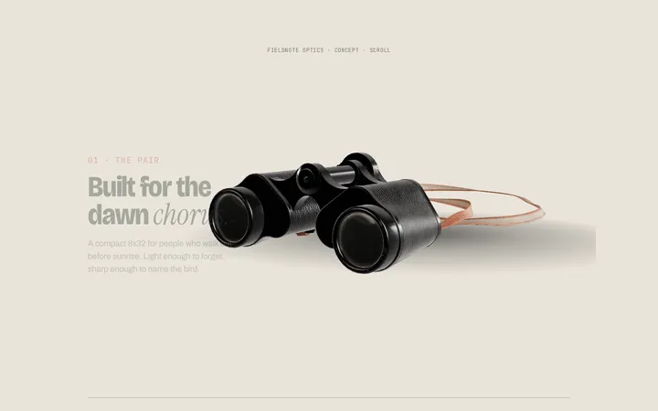
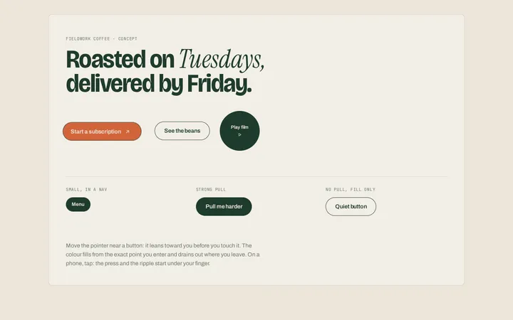
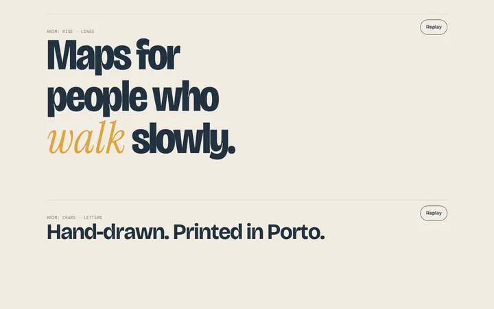
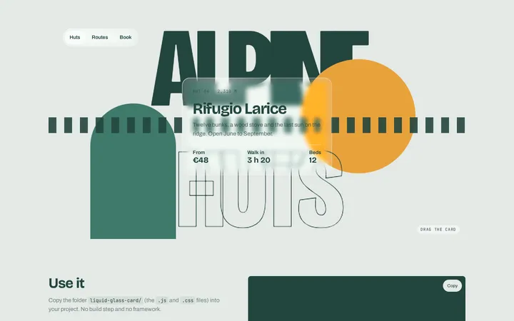
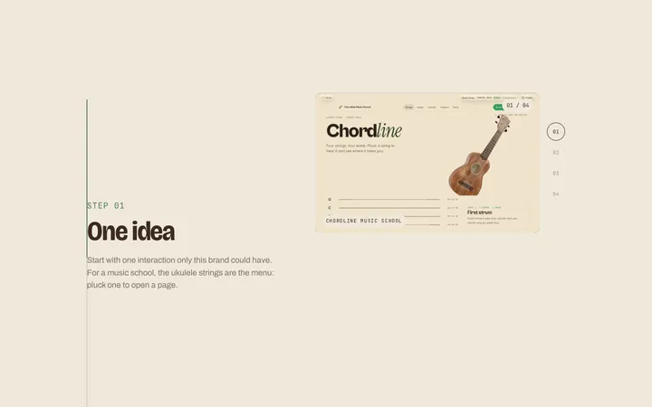
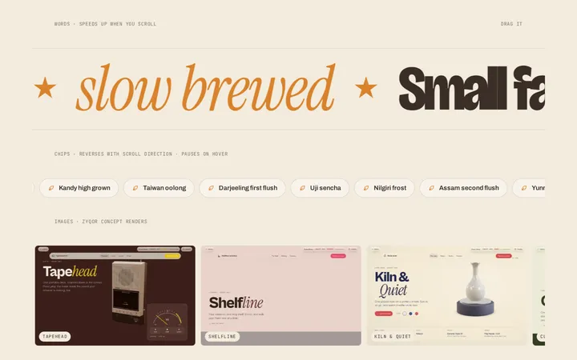
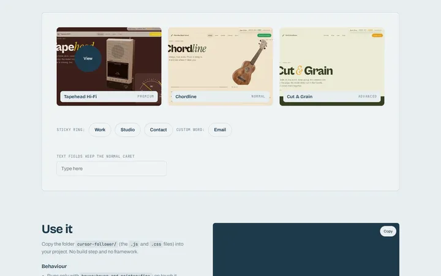
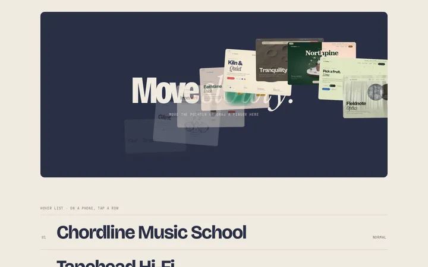
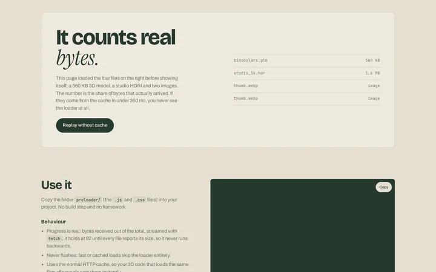
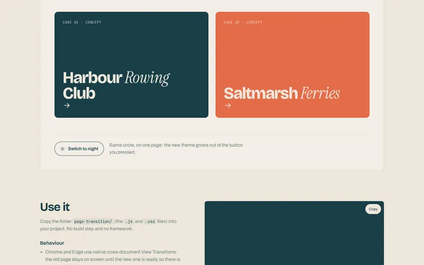
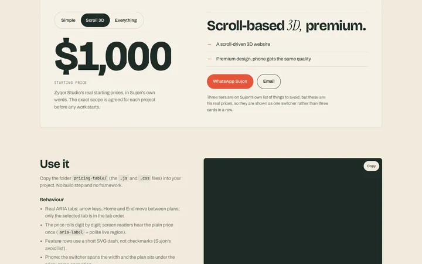
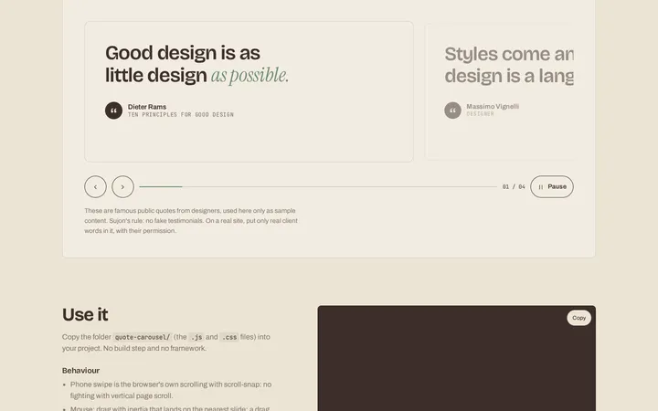
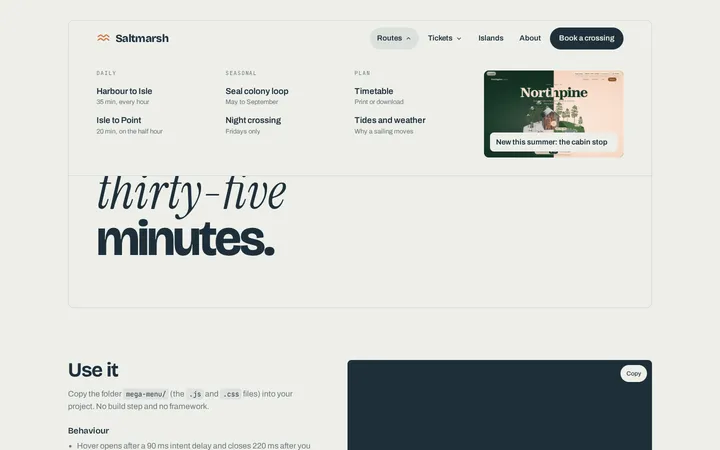
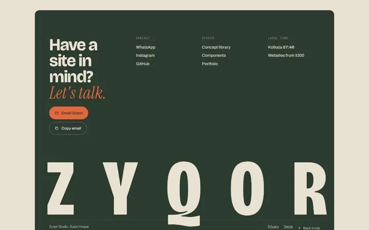